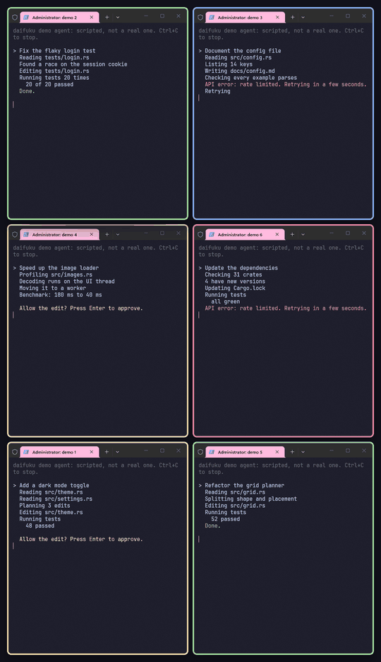

Daifuku
Daifuku opens a grid of AI agent terminals with one key and colours each window's border by what its agent is doing.
Download for Windows
For Windows 10 and 11 with Windows Terminal and Claude Code, signed in to an account that is an administrator. On a PC with an ARM processor, take the ARM64 version.
If Windows says it protected your PC, click More info, then Run anyway.
Daifuku runs on Windows. Open this page on your Windows PC to download it.

Get going
- Open daifuku.exe from your downloads, press Enter and click Yes when Windows asks for permission.
- When the window says Daifuku is installed, press Enter to close it. Daifuku starts by itself each time you sign in.
- Press Ctrl+Alt+Enter. Six terminals open in a grid, each running Claude Code.
What the borders mean
- Blue: the agent is working.
- Yellow: it is waiting for you, at a permission prompt or a question.
- Green: it is done, or has just started.
- Red: its turn ended on an error, such as a rate limit.
- Each state also has its own border width, so you can tell them apart without the colour.
Keys
- Ctrl+Alt+Enter opens the grid, or brings it back.
- Ctrl+Alt+N takes you to the agent that has waited longest, then to the ones that failed. Press it again for the next one.
- Ctrl+Alt+Backspace puts every terminal back in its place.
- Ctrl+Alt+F4 closes every terminal at once without asking, and an agent that is still working stops with it.
Good to know
- The terminals open as administrator, so the agent and every command it runs have administrator rights.
- In a new terminal, daifuku doctor checks the setup and says how to fix anything that is wrong.
- It does not work while Windows 11's Administrator protection is turned on.
- To remove Daifuku, open Settings > Apps > Installed apps, click the three dots next to Daifuku and choose Uninstall. On Windows 10 it is Settings > Apps > Apps & features, Daifuku, Uninstall. From a terminal, right-click the Start button, choose Terminal (Admin), type daifuku uninstall and press Enter.
Use it with an AI assistant: download the skill.